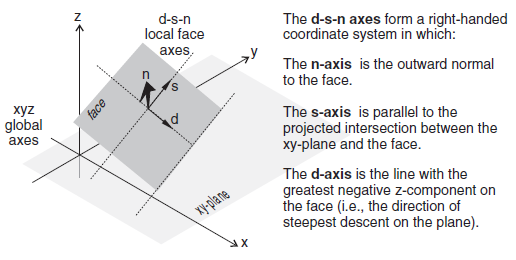
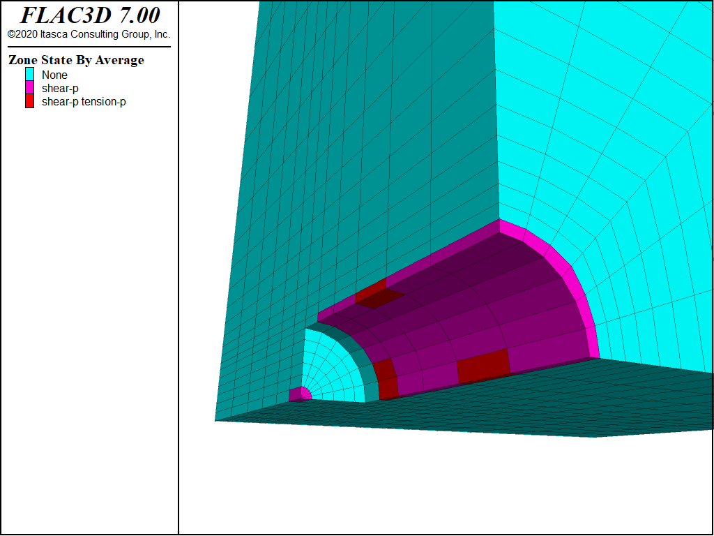
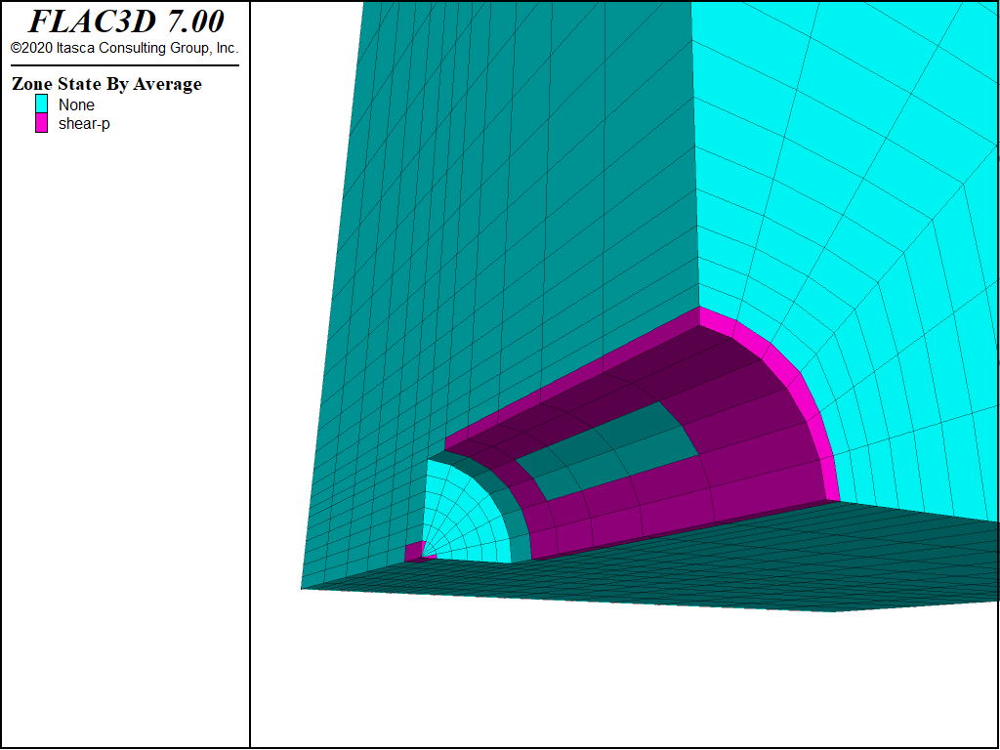
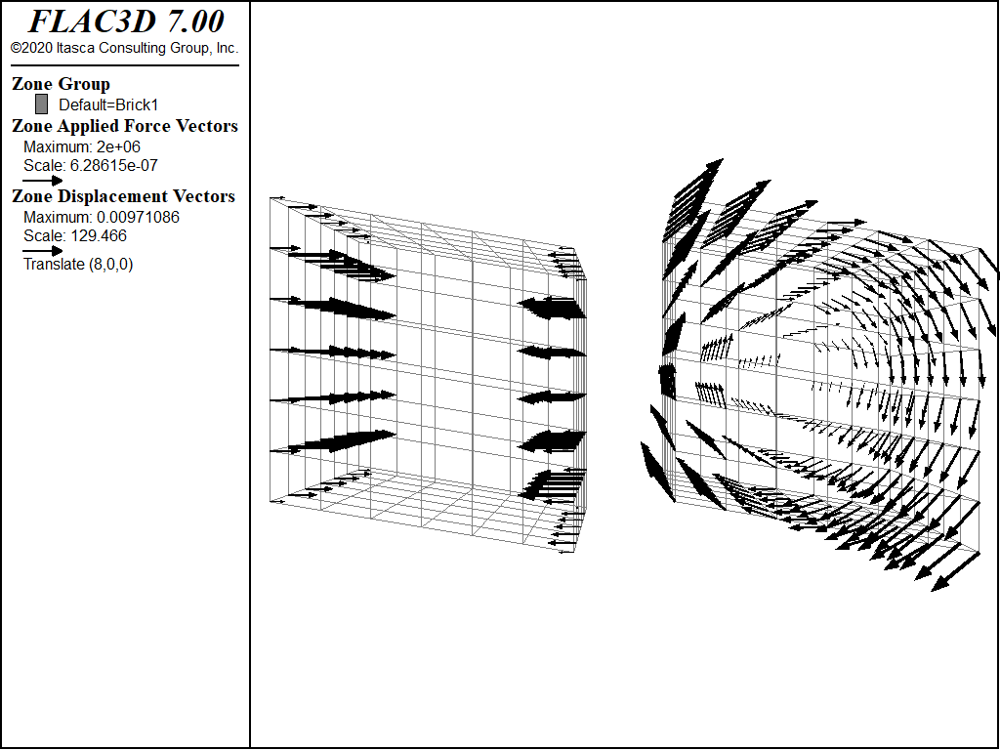
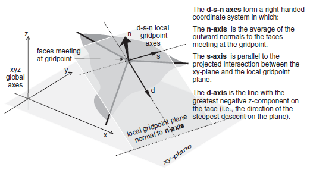
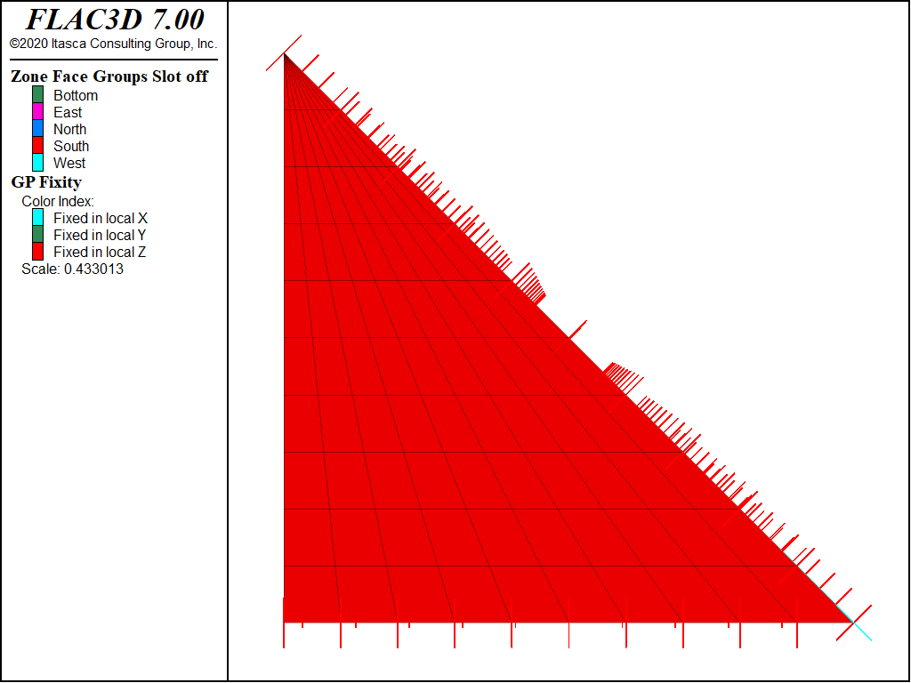
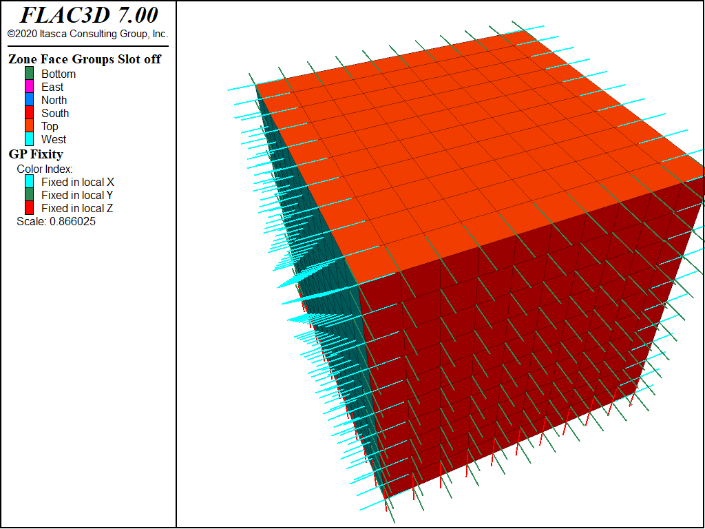

边界条件
数值模型的边界条件，是在数值网格边界规定的场变量值（例如应力和位移）。边界分为真实边界和人工边界两类。真实边界存在于所模拟的物体中（例如隧道表面或地表）。人工边界在现实中不存在，但为将选定数量的网格单元包围起来，必须引入人工边界。对两类边界施加的条件类似；首先讨论这些条件。随后（在人工边界（Artificial Boundaries）中）给出有关人工边界位置和选取方式，以及其对解的影响的一些建议。
边界上可施加的力学条件主要有两类：规定位移或规定应力。自由面是规定应力边界的特殊情况。这两类力学条件见应力边界（Stress Boundary）和位移边界（Displacement Boundary）。
本节列出的所有示例均可在项目文件“BoundaryConditions.f3prj”中找到。
应力边界
默认情况下，FLAC3D 网格边界没有应力和任何约束。可以通过 施加网格单元面条件（zone face apply） 命令向任意边界或边界的一部分施加力或应力。使用 stress-xx 等关键字指定应力张量的各个分量。例如，以下命令
zone face apply stress-zz -1e5 range position-z 0
zone face apply stress-xz -5e4 range position-z 0
将应力张量的给定 \(\sigma_{zz}\) 和 \(σ_{xz}\) 分量施加到所有形心位于 -0.1 ≤ \(z\) ≤ 0.1 范围内的边界网格单元面上。其他应力分量均为零。
应力既可沿模型全局 \(x\)、\(y\)、\(z\) 方向施加，也可沿局部边界面的法向和切向施加。关键字 stress-normal 对面施加法向应力，关键字 stress-dip 和 stress-strike 对面施加剪应力。stress-dip 为沿局部面倾向施加的应力分量，stress-strike 为沿走向施加的应力分量。局部面坐标轴的方向见下图。请注意，不能同时对同一个面施加全局（\(x\)、\(y\)、\(z\)）坐标轴应力和局部（\(d\)、\(s\)、\(n\)）坐标轴应力。
使用 施加网格单元面条件（zone face apply） 命令时需注意几点。首先，只有位于 范围（range） 所定义范围内的面才会受 施加网格单元面条件（zone face apply） 命令影响；与所有用于选面的几何范围元素一样，选择依据是面形心的位置。其次，按照 FLAC3D 内部应力的一般符号约定（general sign convention），压应力取负号。最后，FLAC3D 实际将应力分量转换为力，即应力张量作用于给定边界平面产生的面力；每次发出 求解模型（model solve） 命令时都会计算面力，大应变模式下还会每隔十步重新计算一次。

图 1：由（d）倾向、（s）走向和（n）法向定义的局部面坐标轴。
还可以使用 zone gridpoint fix 命令以及 force-applied-x、force-applied-y 和 force-applied-z 关键字向网格施加单独的力，这些关键字指定所施加力向量的 \(x\)、\(y\) 和 \(z\) 分量（可使用 force-applied v 一次指定所有分量）。这种情况下不考虑边界面的面积；指定的力直接施加到给定网格点。
可以通过网格单元矢量绘图项查看施加的力，或由施加应力计算得到的面力。需要先执行 执行计算时步命令（model step） 0，以计算供查看的施加力。例如，对倾角为 60°、倾向为 270° 的边界平面，沿其法向施加应力边界条件。将下一示例中的命令剪切并粘贴到数据文件中。
示例名称：对倾斜边界施加法向应力
model new
zone create brick size (4,4,4) point 0 (0,0,0) point 1 (4,0,0) ...
point 2 (0,4,0) point 3 (2,0,3.464)
zone cmodel assign elastic
zone property bulk 1e8 shear .3e8
zone face apply stress-normal -1e6 ...
range plane dip 60 dip-direction 270 origin 0.1,0,0 above
将 -1 × 106 的法向应力施加到指定范围内的边界平面。该范围由倾向 270°、倾角 60° 且位于位置 \(x\) = 0.1、\(y\) = 0、\(z\) = 0 上方的平面定义。绘制“网格单元->矢量”绘图项，并将“数值”属性设为“施加力”，即可查看产生的施加力。
请注意，使用 zone face skin 命令可以轻松识别所需边界，而不必以数学方式描述该平面，如下所示：
model new
model large-strain off
zone create brick size (4,4,4) point 0 (0,0,0) point 1 (4,0,0) ...
point 2 (0,4,0) point 3 (2,0,3.464)
zone face skin
zone cmodel assign elastic
zone property bulk 1e8 shear .3e8
下图显示根据法向应力和边界面面积计算得到的施加到网格上的力。请注意，力向量的大小取决于施加应力的面面积。

图 2：由 单元面施加应力法向（zone face apply stress-normal） 产生的施加力。
施加应力梯度
施加网格单元面条件（zone face apply） 命令可带可选关键字 gradient，允许施加的应力或力在指定范围内线性变化。gradient 后面的参数 v，分别指定应力或力分量沿 \(x\)、\(y\) 和 \(z\) 方向的变化。其数值随距全局坐标原点（\(x\) = 0、\(y\) = 0、\(z\) = 0）的距离线性变化：
其中，\(S^{(o)}\) 为全局坐标原点（\(x\) = 0、\(y\) = 0、\(z\) = 0）处的值，\(g_x\)、\(g_y\) 和 \(g_z\) 分别指定该值沿 \(x\)、\(y\) 和 \(z\) 方向的变化。
以下示例最能说明此功能的工作方式：
zone face apply stress-xx -10e6 gradient (0,0,1e5) range position-z -100 0
应力分量 \(\sigma_{xx}\) 沿 \(z\) 方向变化的方程为
原点（\(x\) = 0、\(y\) = 0、\(z\) = 0）处的 \(\sigma_{xx}\) 应力为 \(\sigma_{xx}\) = -10 × 106；在 \(z\) = -100 处为 -20 × 106。中间各点的应力按其距原点的相对 \(z\) 距离线性缩放。
另一种方法是使用 vary 关键字，FLAC 用户可能对此更熟悉。关于这两种方法的进一步讨论，见数值修饰项（add、multiply、gradient 和 vary 关键字）（Value Modifiers (add, multiply, gradient, & vary keywords)）。
通常，施加应力梯度用于重现重力造成的应力随深度增加的效应。务必确保施加梯度与 zone initialize-stresses 命令指定的应力梯度相容。有关应力梯度的更多说明，见初始条件（Initial Conditions）。
改变边界应力
在 FLAC3D 模拟过程中，可能需要改变所施加应力的数值。例如，基础上的荷载可能发生变化。若要突然改变已有施加应力或荷载，可发出新的 施加网格单元面条件（zone face apply） 命令，范围和应力分量必须与原命令完全相同，但修改其数值或变化方式。此时，FLAC3D 会检测已有施加条件的冲突并将其移除。对于任何重叠的 施加网格单元面条件（zone face apply） 命令，新值都会替换现有值。更新边界应力前，可能需要先移除边界条件（使用 zone face apply-remove）。
许多情况下，需要逐渐改变边界应力。这通常用于尽量减小对敏感系统的冲击，尤其是在解的“路径相关性”很重要时（见局部化、物理不稳定性与路径相关性（Localization, Physical Instability and Path-Dependence））。施加网格单元面条件（zone face apply） 命令提供多种选项，使逐渐施加（或移除）边界条件更加简单直接。例如，要在保持准平衡的同时逐步增大施加应力，可使用 servo 关键字的 ramp 选项：
zone face apply velocity-normal 0 range group 'West'
使用 FISH 函数施加变化的应力边界
servo 关键字及其各选项只是使施加边界值随时间变化的一种方法。也可使用 FISH 或表格（tables）为数值添加乘数。每一步都会查询表格或调用 FISH 函数，并将施加边界值乘以返回值。因此，返回 1.0 不会产生影响，而返回 0.0 则会有效移除边界（对于应力边界）。以下简单示例使用一个简短的 FISH 函数，使施加应力按正弦规律变化。
zone property bulk 1e8 shear 7e7 density 1000
zone face apply velocity-normal 0 range group 'West'
fish define apply
apply = math.sin(dynamic.time.total*10)
使用表格数据施加变化的应力边界
以下示例创建一个简单表格，用于将应力边界从零逐渐增加。请注意，对于表格（table）乘数，必须指定用作 \(x\) 查询值的时间值。本例指定动力时间。默认情况下，表格乘数使用当前累计步数作为 \(x\) 查询值。
zone cmodel assign elastic
zone property bulk 1e8 shear 7e7 density 1000
zone face apply velocity-normal 0 range group 'West'
圆形隧道的逐步开挖
由于 FLAC3D 依据物理规律确定其趋于静力收敛的路径，模型的突然变化可能产生准惯性效应，人为夸大该区域的损伤。一种缓解方法是逐渐开挖区域，使移除网格单元的影响不那么突然。单元松弛开挖（zone relax excavate） 命令即为此目的而创建。这是一种基于网格单元的施加条件，逐渐降低范围内网格单元的应力、刚度和密度，直到它们对模型产生影响，然后将其设为空本构模型。上一句缺少一个词，在“产生影响”之前是否应加上“不再”？
默认情况下，zone relax 使用伺服控制自动保持准平衡；但该命令还提供多种选项，用于控制逐渐减小待开挖网格单元影响的具体方法。
以下示例创建一个简单的圆形隧道，分别对其进行瞬时开挖，以及通过 单元松弛开挖（zone relax excavate） 逐渐开挖。
model new
model large-strain off
; 创建网格单元
zone create radial-cylinder point 0 0 0 0 point 1 add 18 0 0 ...
point 2 add 0 8 0 point 3 add 0 0 18 ...
dim 1.75 1.75 1.75 1.75 ratio 1.0 .83 1.0 1.2 ...
size 6 6 6 15 fill group 'exc'
zone create radial-cylinder point 0 0 8 0 point 1 add 18 0 0 ...
point 2 add 0 8 0 point 3 add 0 0 18 ...
dim 1.75 1.75 1.75 1.75 ratio 1.0 1.2 1.0 1.2 ...
size 6 6 6 15 fill
zone face skin
; 分配本构模型和属性
zone cmodel assign mohr-coulomb
zone property bulk 33.33e9 she 25e9 fric 45 cohesion 15e6 ten 5e6
; 设置边界条件
zone face apply velocity-normal 0 range group 'West' or 'East'
zone face apply velocity-normal 0 range group 'South' or 'North'
zone face apply velocity-normal 0 range group 'Bottom' or 'Top'
; 初始条件
zone initialize stress xx -65e6 yy -65e6 zz -65e6
model solve
model save 'initial'
; 瞬时开挖
zone delete range group 'exc'
model solve
model save 'instant'
; 逐步开挖
model restore 'initial'
zone relax excavate range group 'exc'
model solve
model save 'relax'
请注意，采用卸荷时，达到平衡所需的总步数实际上略少。这种情况并不少见。
检查开挖周围网格单元的状态标志可见，逐渐卸荷的模型不仅损伤较少，而且完全没有拉伸破坏标志。


图 3：隧道瞬时开挖的塑性状态。


图 4：隧道逐渐卸荷开挖的塑性状态。
注意事项与建议
本节介绍应力边界的一些常见困难。
在 FLAC3D 中，可以对没有位移约束的物体边界施加应力（许多有限元程序则要求具有某些约束）。物体会以与真实物体完全相同的方式响应（即如果边界应力不平衡，整个物体就会开始运动）。以下数据文件说明这一效应。
网格不平衡时的旋转
model new
model large-strain off
zone create brick size 6,6,6 point 1 (6,0,-1)
zone cmodel assign elastic
zone property bulk 8e9 shear 5e9
zone face apply stress-xx -2e6 range position-x 0
zone face apply stress-xx -2e6 range position-x 6
model step 500
本例生成的图见下图。施加的 \(\sigma_{xx}\) 应力使物体受到水平力。由于物体倾斜，这些力产生力矩，使物体旋转。


图 5：倾斜物体上施加的水平力及其引起的旋转位移。
当从由应力边界条件支承的物体中开挖材料时，会出现类似但更不易察觉的效应：物体最初在重力作用下处于平衡，但移除材料会减小其重量。于是整个物体开始向上运动，如以下数据文件所示。
移除材料引起的上浮
model new
model large-strain off
; 创建网格单元
zone create brick size 5,5,5
zone face skin
; 分配模型和属性
zone cmodel assign elastic
zone property bulk 8e9 shear 5e9 density 1000
; 边界条件
zone face apply velocity-normal 0 range group 'West' or 'East'
zone face apply velocity-normal 0 range group 'North' or 'South'
zone face apply stress-normal -5e4 range group 'Bottom'
; 初始条件
model gravity 10
zone initialize-stresses
model solve ; 初始处于平衡状态
zone cmodel assign null range position (1,1,3) (4,4,5)
model step 100 ; 物体不再处于平衡状态
下图显示了上浮现象。通过固定底部边界而非用应力支承，可以消除运行此数据文件时遇到的问题。人工边界（Artificial Boundaries）一节介绍了此类人工边界位置的相关信息。

图 6：移除材料时模型的上浮。
位移边界
FLAC3D 中无法直接控制位移；事实上，位移不参与计算过程。要对边界施加给定位移，必须规定边界在给定步数内的速度。若期望位移为 \(D\)，可施加速度 \(V\) 并运行 \(N\) 步（其中 \(N = D/V\)）。实际应用中，应使 \(V\) 较小而 \(N\) 较大，以尽量减小对被模拟系统的冲击。可以使用 施加网格单元面条件（zone face apply） 命令，或 zone gridpoint fix 和 zone gridpoint initialize 命令指定速度；也可以指定梯度。
局部坐标系与施加速度
施加速度条件始终作用于网格点，但可以通过网格单元面命令（例如 单元面施加速度局部（zone face apply velocity-local））或网格点命令施加。使用网格单元面命令时，将选择与所选面连接的所有网格点。
速度可以按全局 \(x\)、\(y\)、\(z\) 坐标轴指定（即使用关键字 velocity-x、velocity-y 或 velocity-z），也可以按局部坐标轴指定（使用关键字 velocity-dip、velocity-strike 或 velocity-normal）。可以在一条命令中以向量形式给出所有局部或全局速度分量（分别使用 velocity-local v 或 velocity v）。局部坐标轴由各网格点处的法向向量定义，遵循下图的约定：

图 7：由（d）倾向、（s）走向和（n）法向定义的网格点局部坐标轴。
每个网格点都有自己的局部坐标系，可通过 zone gridpoint system 命令指定。如果施加所要求的条件需要，施加网格单元面条件（zone face apply） 功能会覆盖这些值。它还会自动尝试旋转并选择适当的局部自由度，使同一网格点能够具有多个速度约束。如果无法实现，则会移除先前的施加条件，以容纳新条件。这意味着无需预先为倾斜或不规则边界计算相容的局部坐标系。例如，可以用一条命令对楔形块体施加滚动边界：
model new
zone create wedge
zone face skin
zone face apply velocity-normal 0 range group 'East'


图 8：楔形部分上的网格点约束。
请注意，倾斜表面上的法向自动选定，坡趾处则施加了多个约束。坡趾处的面外自由度仍然自由。
表面角点与速度边界
所采用的网格点法向，是在该网格点相交且包含在该施加条件中的各面法向向量的平均值。这意味着必须谨慎选择面，以得到期望的法向向量；通常需要多条施加命令，才能对沿边界的网格点规定多个条件。例如，如果试图通过一条命令对模型的五个面施加滚动边界：
zone face apply velocity-normal 0 ...
range group 'North' or 'South' or 'East' or 'West' or 'Bottom'
其结果见下方网格点固定情况图。模型角点沿对角方向固定，因为这是对连接该网格点且包含在该施加条件中的所有面取平均后得到的法向向量。

如果将命令拆分为三条，分别处理 ‘East’ 和 ‘West’、‘North’ 和 ‘South’、以及 ‘Bottom’，结果为：
zone face apply velocity-normal 0 range group 'West' or 'East'
zone face apply velocity-normal 0 range group 'North' or 'South'
zone face apply velocity-normal 0 range group 'Bottom'


图 10：使用多条施加命令时的速度约束方向。
FLAC3D 文档的示例问题中经常采用这种方式。请注意，由于 ‘West’ 和 ‘East’ 两个表面没有公共边界，可以将其合并在一条命令中。
利用局部坐标轴，可在任意方向上施加速度条件。可使用 system 关键字为局部坐标轴任意指定一个法向网格点方向；这将覆盖默认的法向方向。
Fix 与 Apply 的比较
另一种指定网格点速度的方法是使用 zone gridpoint fix 命令。例如，以下命令等效，两者均对与 东（East） 组中各面连接的所有网格点施加固定速度 (1e-5,0,0)。
zone gridpoint fix velocity (1e-5,0,0) range group 'East'
zone face apply velocity (1e-5,0,0) range group 'East'
通常优先使用 施加网格单元面条件（zone face apply） 命令，因为施加条件功能使用网格点局部坐标系和固定标志。在这些位置手动设置的任何值都可能被后续施加条件覆盖。此外，施加条件功能会自动计算局部坐标系，并尝试协调多个约束。但请注意，施加网格单元面条件（zone face apply） 目前只能作用于外表面，而 zone gridpoint fix 可以作用于模型中的任意网格点。
反力
当网格点作刚性移动时，可以使用 FISH 监测网格点处的反力。通过一个简单的 FISH 函数，在所需范围内累加 节点不平衡力（gp.force.unbal） 内置函数的返回值，即可得到沿边界的反力总和。（见教程：使用 FISH（Tutorial: Working with FISH）。）
非均匀速度
如果需要规定非均匀速度，可以使用 gradient 关键字。对于更复杂的速度分布，或随模拟过程变化的速度分布，则需要编写 FISH 函数。下一示例通过一个土体块右侧的旋转挡土墙模型说明这种方法。
旋转挡土墙
model new
; 创建网格单元
zone create brick size 10 5 5
zone face skin
; 本构模型和参数
zone cmodel elastic
zone property shear 1e8 bulk 2e8
; FISH 函数
fish operator apply(gp,dum,rate)
local p = gp.pos(gp)
local x = rate * p->z / 5.0
local z = -rate * (p->x - 10.0) / 5.0
return vector(x,0,z)
end
; 边界条件
zone face apply velocity (0,0,0) range group 'West' or 'Bottom'
zone face apply velocity (1,1,1) fish-local apply(0,0,1e-3) range group 'East'
; 设置
model large-strain on
; 循环
model step 1000
本例使用 fish-local 关键字，在循环计算过程中调整每个网格点的速度。每个循环对每个网格点调用一次 FISH 函数 apply。第一个参数 单元节点指针（gp） 是指向网格点的指针。本例未使用第二个参数。根据网格点的位置计算速度，该速度在大应变模式下使右侧边界旋转。在大应变模式下，墙体的速度分布随几何形状变化而调整。请注意，本例给定的速度远高于真实模拟所需的速度，仅用于演示。

真实边界——选择适当类型
有时难以确定应对所模拟物体的某个表面施加哪类边界条件。例如，模拟实验室三轴试验时，压板施加的荷载应视为应力边界，还是应将压板视为刚性位移边界？当然，可以模拟包括压板在内的整个试验机，但这可能十分耗时。（请记住，刚度差异很大时，FLAC3D 需要很长时间才能收敛。）一般来说，若施加荷载的对象相对于试样非常刚硬（例如，刚度超过试样的 20 倍），可将其视为刚性边界。若相对于试样很柔软（例如，刚度仅为试样的二十分之一），则可将其模拟为应力控制边界。显然，作用于物体表面的流体压力属于后一类。为确定土体的极限荷载，土体上的基础通常可以表示为以恒定速度移动的刚性边界。这种方法还有一个优点——更容易控制试验，并获得良好的荷载位移曲线。众所周知，刚性试验机比柔性试验机更稳定。
人工边界
人工边界分为两类：对称面和截断面。
对称平面
有时可以利用系统几何形状和荷载关于一个或多个平面对称这一特点。例如，如果所有条件均关于某竖直平面对称，则该平面上的水平位移为零。因此，可以将该平面设为边界，并通过 单元面施加速度法向（zone face apply velocity-normal） 0 命令固定所有网格点的水平方向，范围设为该边界平面。在所讨论情况下，竖直对称面上的 \(y\) 和 \(z\) 速度分量不受影响，不应固定。其他对称面也可作类似考虑。对称面还可以设在与 \(x\)、\(y\)、\(z\) 坐标轴成角度的边界上。
边界截断
模拟无限体（例如地下隧道）或非常大的物体时，由于内存和计算时间限制，可能无法用网格单元覆盖整个物体。应将人工边界设置在距离关注区域足够远的位置，使该区域的行为不受明显影响。了解这些边界应放多远，以及关注区域内计算所得应力和位移可能存在多大误差，会很有帮助。
选取人工边界位置时，应考虑以下几点：
- 固定边界会使应力和位移均被低估，而应力边界的影响相反。
- 这两种边界条件给出的结果将真实解夹在其中，因此可采用较近的边界进行两次试算，并对两个结果取平均，合理估计真实解。
- 边界位置的影响对弹性体最为明显，因为出现塑性行为时，位移和应力变化更局限于局部；存在一个自然的影响截断距离，大部分变化发生在该距离以内。因此，人工边界可放得稍近一些，而不致引入严重误差。但是，任何人工边界都不能近到吸引塑性流动，否则将使解失效。
开展详细分析之前，最好始终先运行几个边界位置不同的粗略模型，评估边界对计算响应的潜在影响。
| 这些内容对您有帮助吗？… 版权与免责声明 |
FLAC3D © 2019, Itasca | 原文更新于 2020 年 10 月 8 日 |